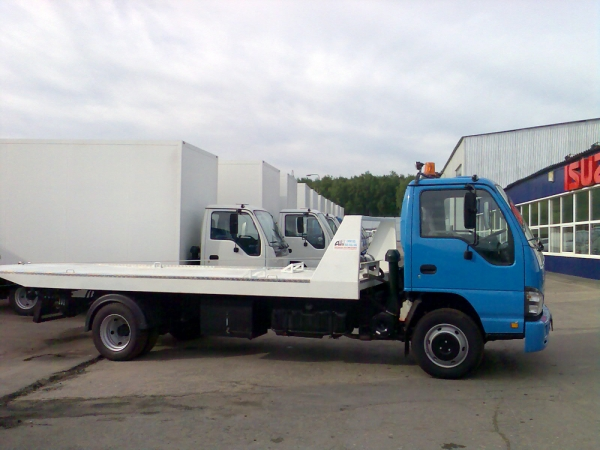

Эвакуатор Набережные Челны
ВЫЗОВ ЭВАКУАТОРА: 8-953-99-81-333
8-937-583-81-91 8-987-060-75-03
Услуги эвакуатора предоставляются физическим и юридическим лицам для
транспортировки разных видов спецтехники, которая не имеет возможности ехать по обычным дорогам
из-за разных причин. К примеру, с помощью эвакуатора выполняется перевозка такой частной техники:
неисправные автомобили, квадроциклы, водный транспорт, снегоходы, вездеходы и тому подобное.
ЭВАКУАТОР НАБЕРЕЖНЫЕ ЧЕЛНЫ ДЁШЕВО
Низкие цены - эвакуатор по городу от 1 000 руб.
Вызов эвакуатора и погрузка-выгрузка а/м - бесплатно.

ЭВАКУАТОР В НАБЕРЕЖНЫХ ЧЕЛНАХ
Мы
осуществляем эвакуацию автомобилей, мототехники, микроавтобусов и
спецтехники на лучших условиях. Нас выгодно выделяет среди конкурентов
современный парк спецтехники, опытные водители-эвакуаторщики и низкие
цены на услуги. Оператор примет вызов и после получения всей
необходимой информации, назовёт цену на услуги автоэвакуатора и
ориентировочное время прибытия. Мы уже много лет занимаемся помощью на
дорогах! Много наших клиентов заказывает наш эвакуатор в Набережных
Челнах не один раз. Если при эвакуации с вашим авто что-то случится, то
страховка покроет вам этот ущерб. Вы можете звонить нам в любое время
дня и ночи, мы всегда на связи. Оформив заказ на услуги эвакуатора в
нашей компании, Вы можете рассчитывать на получение качественной
техпомощи относительно недорого. Мы рады помочь Вам в экстренном случае
- наши специалисты быстро, бережно и недорого эвакуируют Ваш
автомобиль. Все работники имеют большой опыт и высокую квалификацию.
Наш опыт работы позволяет нам уверенно решать самые сложные задачи. Мы
всегда готовы эвакуировать Ваш автомобиль, на любой дороге, в любых
условиях и в любом состоянии. Эвакуатор круглосуточно готов к работе.
Всегда можно договориться с нами по цене. Антикризисные цены! Одно из
неоспоримых преимуществ автоэвакуатора является полная безопасность
транспортировки транспортных средств. Перевозим любой
автотранспорт массой до 4 тонн, вытаскиваем авто из кюветов, гаражей,
выгружаем из контейнеров и автофургонов. Наша компания осуществляет
выезд сразу после поступления звонка.
Звоните прямо сейчас по телефонам 8-953-99-81-333
8-937-583-81-91 8-987-060-75-03
|
|